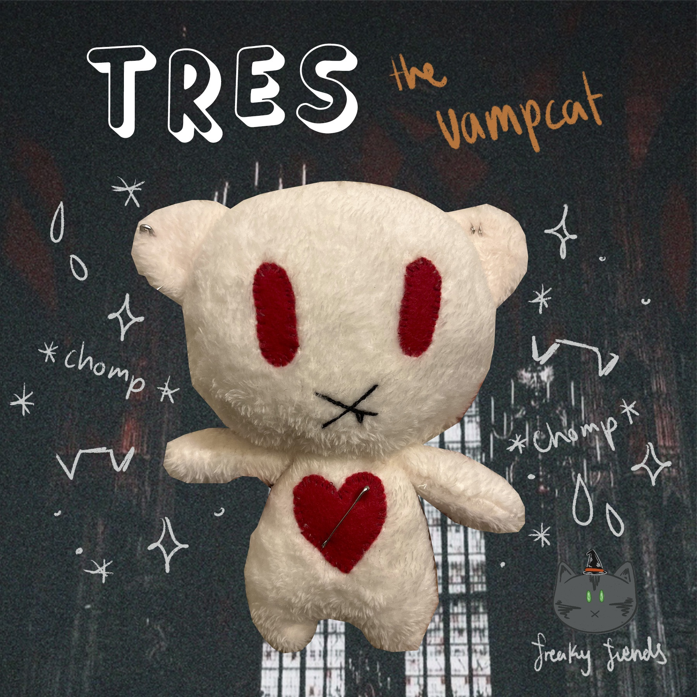
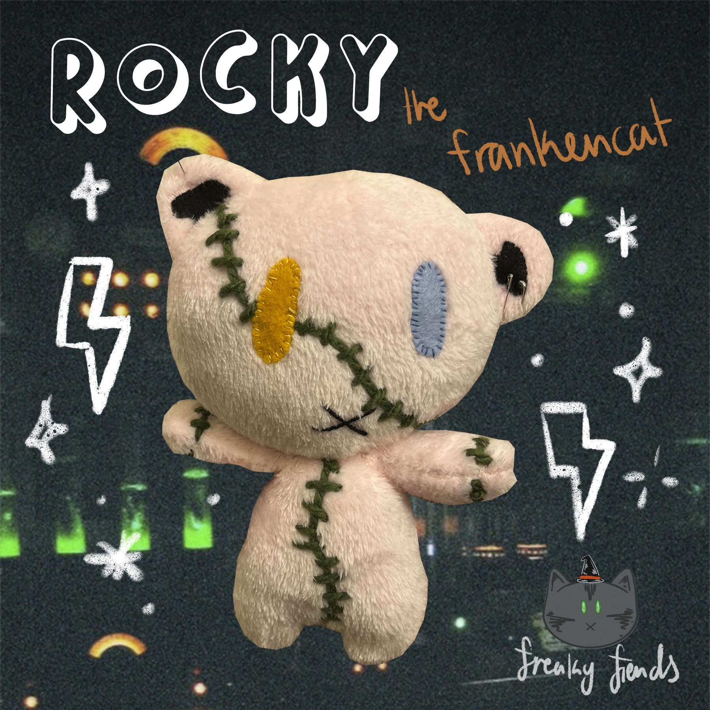

The merch options for Freaky Fiends are currently limited, more to come soon!!
The first ever production for Freaky Fiends was a series of two plushies, which were handmade in 2022 during the development of a college project, they were the start of it all.
Handsewn and imperfect they add the perfect touch to a brand made out of love and a passion project.
In this first iteration, you will find one is missing, due to time constraints,
the creator was unable to produce all three fiends, sticking with Tres and Rocky for this first batch.
Although the merch is currently unavailable, due to it's small business nature, shown bellow are the first ever plushies produced for Freaky Fiends.

Tres
This tres handmade plushie was designed to reseble the original design based on resources available.
In its cat-like appearance, Tres has white fur, red felt eyes and an adorable stitched mouth with a single fang peeking out.
Adorned with a stitched heart in their chest and safety pin piercings.
Though he might look sharp, he's extremely soft and plush, perfect for protecting in the dark on night.

Rocky
Rocky is a little funky and a whole lot cool. With it's soft pink fur, green stitches to contrast and mismatched eyes, this fellow creature is a beauty in disguise.
The homemade details really come out with this one, just like the story, his hand-stitching bring a unique look sure to make the heart of many melt and come back to live.